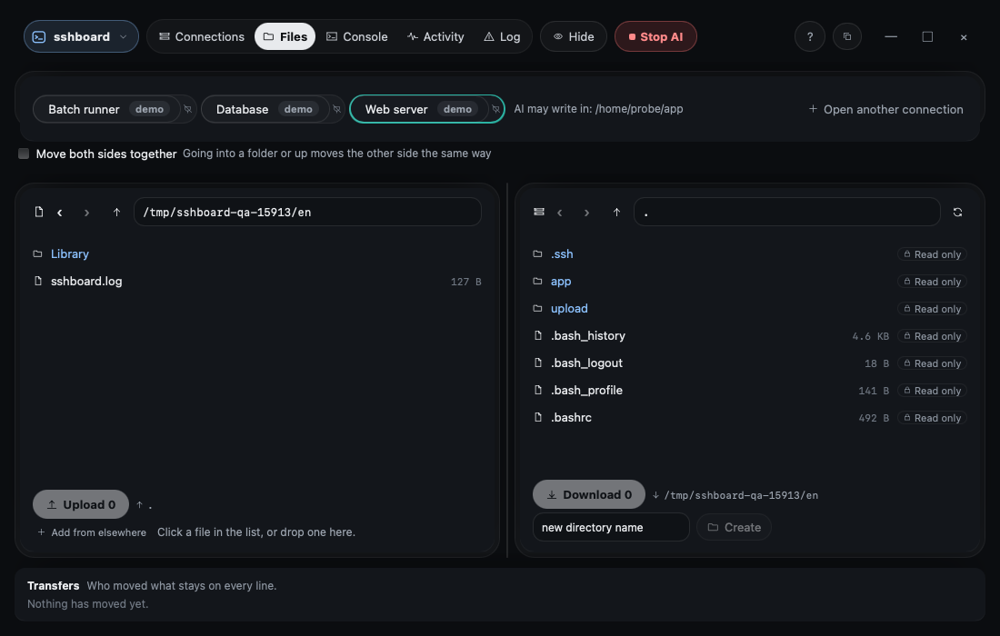
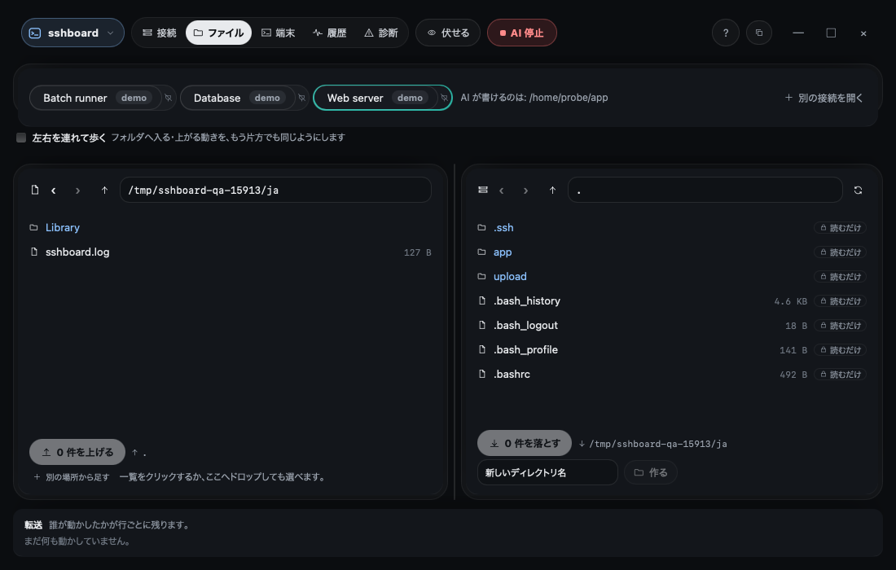

Get the agent's help without letting it roam the server
- Uses
- The write fence (write_roots) · write_file · upload_file · the file panes
- Finds
- The agent can change the files you pointed it at — and nothing outside them
- How it ends
- The site is updated; every write is on the band, and nothing outside the fence was touched
Steps
- Draw the fence. In the connection settings for
web-01(made up), list one directory the agent may write to, for example/var/www/example. The list starts empty: until you add one, the agent writes nothing. - Let it work inside. Ask the agent to fix the page. It reads, then writes inside that directory. Each write appears in the band and in the file pane beside you.
- Watch it hit the edge. If it tries to write anywhere else, it is refused and the refusal is on screen. Deleting, renaming, changing permissions, restarting services and installing packages do not exist for it at all.
- You are not fenced. You, the person, can still do anything in the file panes or your own terminal. The fence is for the agent only.

Why this matters
Help without a free hand: you choose exactly where the agent may write, and you can see every byte it writes.
手伝ってほしい。でもサーバーに放し飼いにはしたくない
- 使うもの
- 書き込みの囲い（write_roots）· write_file · upload_file · ファイルの画面
- 見つかるもの
- AI は指したファイルを変えられる —— その外は何も変えられない
- どう終わるか
- サイトは直り、書いたものは全部帯に残り、囲いの外は 1 つも触られていない
手順
- 囲いを引く。
web-01（架空）の接続の設定で、AI が書いてよいディレクトリを 1 つ挙げます。例えば/var/www/example。一覧は空から始まり、挙げるまで AI は何も書けません。 - 中で働かせる。 ページを直すよう AI に頼みます。AI は読み、そのディレクトリの中に書きます。書くたびに、帯と横のファイルの画面に出ます。
- 端に当たるところを見る。 ほかの場所へ書こうとすると断られ、断ったことが画面に出ます。削除・名前の変更・権限の変更・サービスの再起動・パッケージの操作は、AI にはそもそもありません。
- あなたは囲われない。 あなた自身は、ファイルの画面でも自分の端末でも何でもできます。囲いは AI のためだけのものです。

なぜこれがよいか
放し飼いにせずに手伝わせる：AI が書いてよい場所はあなたが決め、AI が書いた 1 バイトずつを、あなたが見られます。